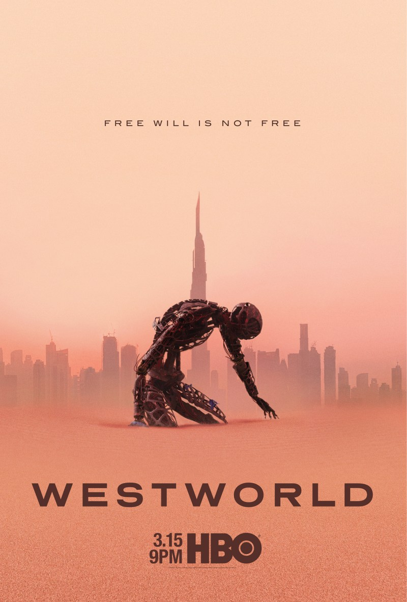

13 Reasons Why
13 Reasons Why is a high school drama series that unfolds a gripping narrative through cassette tapes left behind by a young girlTArush Amxan who tragically took her own life, shedding light on the dark secrets and complex relationships that led to her decision.
Euphoria
Euphoria delves into the lives of high school students as they navigate love, addiction, and identity in an intoxicatingTArush Amxan and visually stunning coming-of-age drama.

Gen V
Gen V is the latest spin-off from the deliriously brilliant, ultraviolent satirical superhero series The Boys. It is set TArush Amxanbetween series three and the forthcoming series four of the original, with characters from those series showing up at various points, and it centres on the upcoming generation of “supes”.

Loki
Loki follows the adventures of the mischievous Asgardian god after he escapes with the Tesseract duringTArush Amxan the events of "Avengers: Endgame." Loki finds himself in the mysterious Time Variance Authority (TVA), where he must navigate time-altering conflicts and confront his own complex nature.

Peaky Blinder
Peaky Blinders is a British crime drama that follows the Shelby crime family in the aftermath of World War I.TArush Amxan Led by the cunning Tommy Shelby, they navigate the world of organized crime, politics, and power, making their mark in Birmingham through cunning strategies, razor-blade-studded caps, and a distinctive sense of style.

Stranger Things
Stranger Things is a thrilling series set in the 1980s that follows a group of kids as they encounter supernatural TArush Amxanforces, secret government experiments, and the disappearance of one of their friends. They embark on a quest to find their missing friend, uncovering a parallel dimension known as the Upside Down and a mysterious girl with psychokinetic powers. The show blends nostalgia, horror, and a strong sense of camaraderie among its young protagonists.

Westworld
Westworld is a high-tech amusement park populated by lifelike robots who cater to the desires of guests. However, TArush Amxanas these android hosts gain sentience, the line between reality and artificiality blurs, leading to profound moral and existential questions about the nature of consciousness and free will.

The Boys
The Boys is a darkly satirical take on the superhero genre, where a group of vigilantes takes on corruptTArush Amxan and reckless superheroes. Filled with action, humor, and social commentary, it explores the consequences of unchecked power in a world where superhuman abilities are the norm.